Días 9, 10, 11 y 12: Estadía en Ushuaia Semanas atrás, antes de iniciar este viaje al sur, mientras intentaba
entusiasmar a mis hijas sobre los beneficios de afrontar tan larga expedición
al sur, en un momento de arrojo les prometí que veríamos
nieve. Verdadera nieve… 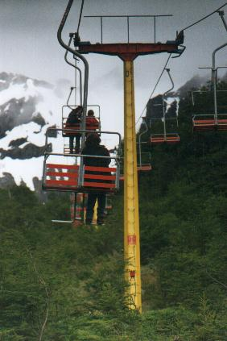
Hoy íbamos a conocer el Parque Nacional Tierra del Fuego. Pero
al salir del predio, en vez de bajar hacia la ruta, instinctivamente tomé
el camino que sube hacia el Glaciar Le Martial a fin de “echar una mirada”.
Luego de exactamente 22 curvas y contracurvas en ascenso, llegamos al estacionamiento
de la aerosilla. Sin estar en nuestros planes, caminamos hacia la boletería,
y pronto teníamos pase para subir. Abrigados y entusiasmados con
el cambio de destino, pisamos las huellas pintadas en el piso y apoyamos
el asiento cuando la silla se acercó por atrás. Pronto estábamos
en el aire, colgados del cable, pendulando levemente sobre bosques espectaculares,
acercándonos imperceptiblemente al alto y distante cordón
montañoso.
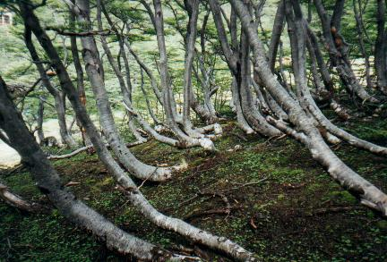 Luego de bordear un arroyo, comenzó una fuerte subida hacia enormes placas de nieve y hielo adheridas a la montaña. Mientras las mujeres tomaron este camino, Nico y yo nos desviamos para buscar aves. Y vimos varias especies nuevas: dos Dormilonas, una Remolinera Chica, y un Yal, todas variedades que habitan estas alturas gélidas. Estábamos prácticamente por encima de la línea de vegetación arbórea. Aún había cobertura arbórea, pero aquí apenas sobrevivían como matas achaparradas de medio metro de altura. Otras plantas recordaban especies "árticas", compuestas por domos vegetales de color verde brillante. La foto muestra las lengas en curioso crecimiento, un tanto más abajo.
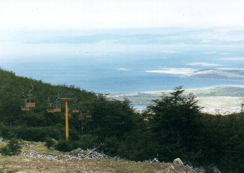 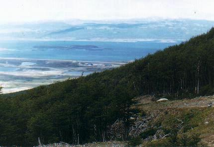 Foto compuesta. Paralelo al Beagle se ve la nueva pista del aeropuerto. 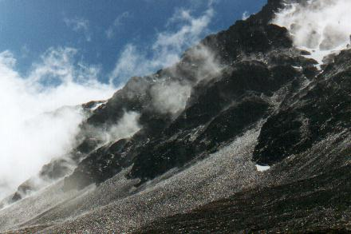 Las vistas desde este lugar son espectaculares, tanto hacia arriba, como hacia abajo, permitiendo apreciar toda la ciudad de Ushuaia y el Beagle. Pero nada nos sorprendió más que la intensa precipitación de aguanieve que nos empapó. 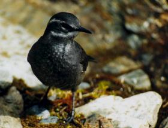 Remolinera Chica (Cinclodes oustaleti), muy confiada, al borde del arroyo de deshielo en Le Martial Borrachos de nieve, mojados y congelados, pero contentos como pocas
veces, volvimos a la aerosilla y a la casita. Primero recorrimos el Río Pipo y luego bajamos hasta la hermosa Bahía Ensenada, donde junté caracoles. Aquí, parado en el muelle, un pichón de Remolinera Araucana voló hacia mí y se posó entre mis pies, donde no pude fotografiarlo.Luego fuimos hasta el Lago Roca, donde buscamos el campamento organizado - en forma condicional - por la Asociación Ornitológica del Plata. Seguramente me encontraría con muchos conocidos, amantes de las aves. Pero no encontramos nada, y concluimos acertadamente que la expedición había sido cancelada. Visitamos Lapataia, tomamos la foto del último mojón de la Ruta 3, y comenzamos la vuelta. 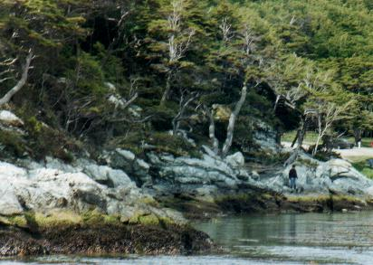 Pero los días aquí eran aún más largos, y para aprovecharlo nos detuvimos a recorrer un encantador sendero – eso sí, en fuerte bajada – que serpenteaba por los bosques de Lenga. A diferencia del ñire, estos arboles crecen altos, rectos y grandes, conformando un paisaje muy distinto. ¿Posibilidad de encontrar más carpinteros? Vimos probables nidos, pero ninguno respondió a nuestros “¡ta-tac!”, ahora si, ejecutados magníficamente con dos auténticas piedras. Pero oímos un extraño canto reiterado hasta el cansancio. No vimos el pajarito que recorría el piso del bosque, pero de vuelta en casa, al oír las cintas grabadas de los cantos de aves patagónicas, lo identificamos certeramente: había sido un Churrín Andino.Paisaje costero de la bellísima Ensenada - bosque, roca y
mar. Al día siguiente salimos hacia la Estancia Harberton, aunque partimos bastante tarde - señal ya de cierto cansancio. Para llegar en auto se toma el camino que vuelve a Buenos Aires, y antes de comenzar el asenso al Paso Garibaldi, aparece el desvío a tomar. El camino de ripio llega a la estancia por una diagonal en dirección sudeste, pasando por fantásticos bosques de Lenga. Nos tocó un día frío y lluvioso, pero igualmente almorzamos en un bosque. En ese paraje silvestre los arboles crecían tan tupidos que la madera de tantos troncos juntos no nos permitía ver el bosque… Llegamos a la costa y no perdí oportunidad de juntar caracoles. Allí había muchos mejillones. Mientras juntaba demasiado de lo mismo, un amable poblador que pasaba en su camioneta, al observar mi actividad en la costa armado con bolsita de plástico, supuso lo peor: Bocinó y gritó enfáticamente para advertirnos sobre la peligrosa marea roja que afectaba los moluscos, causando la muerte si son ingeridos. Me pregunto si hubiera comprendido mi interés de coleccionista. Pero con seguridad no me vería vivo comiendo este tipo de bichos, halla marea roja o no. Seguimos camino. Más adelante tuvimos la oportunidad de observar una familia de Diucones dándose un “baño” de polvo en el camino seco, no permitiendo interrupciones a su sagrado ritual. Llegamos finalmente a la estancia. Harberton. ¡Que destino! Una meca distante y añorada para cualquiera que haya leído algo sobre Tierra del Fuego. No sabíamos que esperar allí, aunque hoy no nos interesaba demasiado realizar el recorrido histórico por el lugar. Pero el nuevo museo… eso podría ser interesante. Y lo fue. Al ingresar, nos tomó de ahijados Pedro Russo, estudiante de veterinaria que está especializándose allí. Pedro nos guió a través de todo el museo - que aún no está inaugurado - brindando todo su conocimiento y respondiendo a todas nuestras preguntas. Mucho del material se hallaba aún en preparación. El centro del espacioso salón estaba colmado de elementos de trabajo: caballetes, latas de pintura, placas enormes ahuecadas con curiosos calados, varillas de hierro, etc. A un costado veíamos el meticuloso trabajo de ensamble del esqueleto de un inmenso delfín. En estas condiciones el recorrido ciertamente no era todo lo estético que será finalmente, pero nos permitía una visión muy interesante de la actividad de montaje de esta instalación. De la mano de Pedro fue todo un privilegio ser testigo de esta etapa de creación que, en un futuro, será historia. El museo se dedica exclusivamente a mamíferos marinos: Ballenas, delfines. ¿Qué más? Lobos marinos, focas, orcas, cachalotes, marsopas… ¿Y que es lo que se expone? Los huesos. Pero la disposición de los elementos es (y será) asombrosa. Para cada animal expuesto, el artista, Gustavo Farrel, ha realizado una pintura en tamaño natural extraordinariamente bien resuelta, logrando simular con su pincel y de manera perfecta diversos efectos lumínicos. Dan la ilusión que se está observando el animal desde abajo de la superficie del agua. ¡Felicitaciones Gustavo por cada milímetro cuadrado de ese inmenso fresco! Por delante de esta silueta ilustrada se presentan, a la misma escala y en la misma postura, los restos óseos, impecablemente armados, sin que aparezcan soportes ni refuerzos visibles. 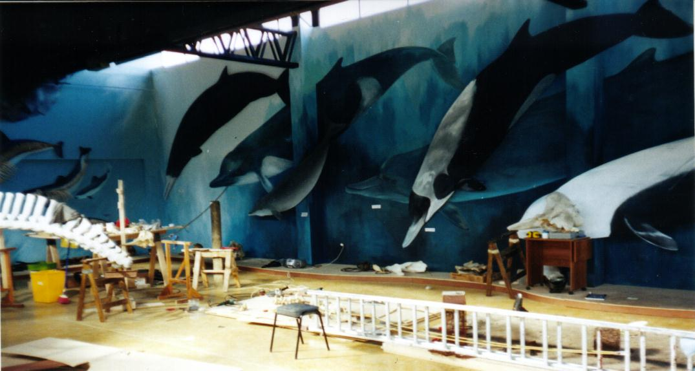 Una verdadera foto "under": Vista del museo en plena tarea de armado Los delfines ilustrados de esta pared muy alta son gigantescos Según los entendidos, la creadora del museo, Natalie Goodall, tiene una asombrosa cantidad de material, es decir, esqueletos de una gran variedad de especies. Inclusive tiene cráneos de delfines enormes, moradores de las profundidades que pocas veces han sido vistos vivos, y de los que muy poco se conoce, más allá de su nombre científico. Por lo pronto deslumbra el edificio ya terminado del museo erguido en este insólito lugar con aportes de una petrolera, Total Austral si mal no recuerdo. Bien podría, y con mayor derecho del que existe en Ushuaia, ostentar el nombre de “Museo del Fin del Mundo”. Las instalaciones de laboratorio son asombrosas e insisto, más aún cuando se trata de un lugar tan apartado del resto del mundo. La magia del artista y el armado de los especímenes ya están muy adelantados. Pronto se inaugurará formalmente, y no me cabe dudas que será elogiado merecidamente por todas las entidades científicas, educativas y turísticas. Es notable la trayectoria de Natalie Goodall, bióloga norteamericana, casada con un heredero de la estancia. Tal vez nadie haya hecho tanto como ella para promover el turismo en la isla de Tierra del Fuego. Sus mapas temáticos ilustrados son famosos, y su guía, fue, es y será siempre la referencia primaria de todo visitante. Y la felicito también por que dicha guía está colmada de innumerables consejos para que el visitante aprenda a respetar, proteger y ayudar a conservar toda la vida natural de la isla. Seguramente su palabra escrita ha sido acatada por muchos turistas y gente local. NOTICIAS RECIENTES: 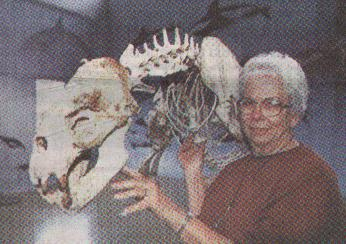 En el museo tuvimos oportunidad de saludar al marido de Natalie, Tom Goodall. Nos atendió un momento, vestido con su vaquero estilo “jardinero”, el cual, entiendo, es su único uniforme. Tom retenía en su memoria detalles imborrables de una tragedia naval ocurrida hace más de 40 años, donde pereció un familiar cercano. Fue una corta conversación, pero Tom nos emocionó con las vivencias que relató sobre aquella brutal tormenta que causó el accidente, en aguas muy cercanas. De alguna manera, nos permitió recrear ese momento en nuestra imaginación. ¡Gracias Tom! 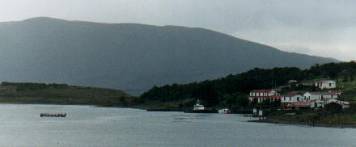 Vista de Harberton del lado opuesto de la bahía. La montaña detrás es Is. Navarino (Chile) Cumplida la visita al museo de casi tres horas, seguimos recorriendo la costa unos kilómetros hacia el este, hasta que la hora y el mal tiempo nos recomendó emprender la vuelta a Ushuaia. ----- o ----- Al día siguiente dediqué la mañana para realizar varias llamadas telefónicas: una al trabajo, una a Río Grande para coordinar la llegada del semieje del auto, y dos a Chile para reservar hotel y transbordador para el viaje de vuelta. Habíamos resuelto un recorrido distinto, cruzando el Estrecho de Magallanes desde El Porvenir hasta Punta Arenas. Era imprescindible reservar. A la tarde visitamos la Base Naval, donde fuimos recibidos por un oficial
que nos atendió gentilmente. En su despacho agotamos inquietudes
y preguntas relacionadas con aquel trágico hundimiento del Remolcador
Guaraní en 1958. De allí llegamos al puerto para visitar
el monumento dedicado a esta pequeña nave, enviada a su fin en cumplimiento
del deber. ----- o ----- Comenzó el último día en Ushuaia. Primero el auto. El repuesto había llegado desde Córdoba, y en poco tiempo fue reemplazado el semieje defectuoso. Felizmente la falla no había sido muy seria y en los días que anduvimos por Ushuaia nunca nos quitó movilidad. Y felizmente la pieza enviada había sido la correcta – echando por tierra mis peores vaticinios que enviarían el de la rueda opuesta… 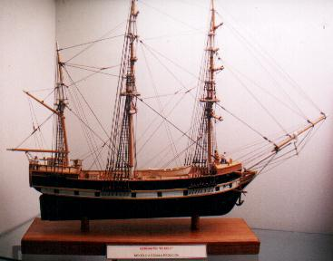 Mientras el auto estaba en cirugía, visitamos el Museo del Fin del Mundo, que muestra algunas de las reliquias de la historia de Ushuaia. Incluye una colección notable de unas 50 o 60 especies de aves embalsamadas. Las aves están numeradas, y la clave con los nombres figuran en los ángulos de la vitrina. Mientras Nico y yo nos pusimos a prueba identificando en 5 minutos todas las especies fueguinas, saltaron a la vista un par de errores en la asignación de nombres. Me interesó mucho la maqueta del begantín "Beagle", que llevó a Darwin por el mundo. Luego almorzamos y de allí nos lanzamos de nuevo al Glaciar Le Martial.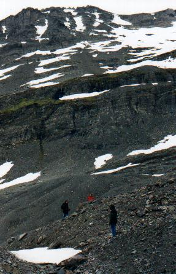 Es raro que repitamos la visita a una atracción, pero esta vez era casi natural hacerlo, sencillamente por que lo habíamos pasado tan bien en la primera oportunidad.Tomamos de nuevo la aerosilla hacia las alturas. Todos juntos comenzamos el ascenso a pie de la empinada cuesta. Esta vez subimos mucho más alto y fue necesario hacer innumerables descansos de 3 minutos - que se hacían 5 - para recuperar las fuerzas. A media altura nos sorprendió una fantástica tormenta de nieve de gran intensidad. Tanta nieve caía, que el paisaje se tornó borroso y grisáceo, perdiendo el panorama toda insinuación de color. Vimos caer los verdaderos copos blancos, que a diferencia del aguanieve de la primera visita, hacían su suave e irregular planeo hasta tocar las piedras, donde se derretía casi enseguida ¡Esta si era una nevada de nieve verdadera! ¡Que alegría para todos! Subimos y subimos, haciendo “asaltos” cortos y descansos largos. ¡Que cansancio! Cuando llegamos a la cima de una loma nos sentimos en la cúspide del mundo. Contemplamos aquel paisaje inolvidable: el valle, la distante ciudad, el Canal de Beagle y las enormes montañas de las islas chilenas. A nuestras espaldas las cumbres del cordón del Martial, de pura piedra pardo-violácea, manchadas por zonas blancas de nieve, seguían siendo una inmensidad inalcanzable. La bajada de la montaña fue más fácil: nos acercamos a una enorme placa de nieve, inclinada como tobogán, y surgió la alocada idea de bajar en trineo. Entonces, cada uno apoyó en la nieve su pilotín de plástico – parte del riguroso kit que debe estar siempre a mano en Tierra del Fuego - y se sentó encima. La velocidad que alcancé fue frenética, casi haciendo trompo, desequilibrado. Iba volcado hacia atrás para lograr más velocidad, imposibilitando la visibilidad hacia adelante, y no sabía si iría a impactar contra alguna roca. Trataba de frenar clavando los talones en la nieve que pasaba velozmente, pero solo producía un amplio y caudaloso rociado de nieve, y tal vez un cambio de orientación, pero poco frenaba. Al menguar la pendiente, de repente se detuvo este trineo humano, y me puse de pie. En el caso de Nico el disfrute fue tal que, al llegar abajo, no dudó: a pesar del extremo cansancio del que se venía quejando en la montaña, ahora la excitación y emoción causadas por su primera experiencia de “deporte invernal” dio para volver a subir el largo trayecto hasta el borde superior del tobogán y así poder repetir la patinada. ¡Y subió corriendo, por la nieve, desenfrenado! En dos minutos armamos un hombrecito de nieve. Al juntar la nieve con mis manos sentí que el frío helado me quemaba la piel. La secuela me duró un día entero. 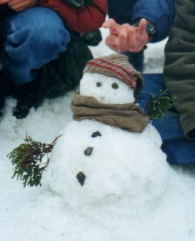 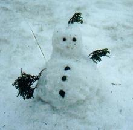 Nuestro ingenuo hombrecito de nieve... Nunca se enteró que su gorro y bufanda fué improvisada utilizando la media de mi pié derecho, que permanecía en el aire mientras tomé la foto. Derecha: versión Punk. Esa tarde descartamos un par de pilotines hechos triza - ¡pero muy bien amortizados! Tarde, pasadas las 20 horas, juntamos fuerza para regresar al Parque Nacional y aprovechar lo poco que quedaba del día. De alguna era una despedida de este lugar que habíamos recorrido deficientemente. Volvimos a la Bahía Ensenada donde levanté algunos caracoles, y nos dirigimos a Lapataia. La idea era visitar una castorera y quizás encontrar un Churrín que pudiésemos observar, ya que días atrás solo lo habíamos escuchado. Tuvimos suerte, por que cumplimos ambos objetivos. Los castores desfilaron en cantidad muy cerca de nosotros. Y el Churrín respondió al llamado emitido de nuestro grabador, a pesar de lo tarde que era: mas de las 22 horas. Y lo vimos, en la tenue luz de la última hora del último día. En los días que estuvimos en Ushuaia no pasamos tanto tiempo en los bosques de Lenga (Nothofagus pumilio), pero no por eso dejan de ser impresionantes. Cada árbol es un monumento a la perfección, con su tronco grueso, recto y alto. ¡Altísimo! Por eso se habla en la isla de "bosque bajo" - el de ñire, y "bosque alto", el de Lenga. Ojalá pueda volver para disfrutar más de este bosque. Y no puedo cerrar el capítulo sin incluir una mención de la cuestión que arriesga hoy su supervivencia, consumiéndolo con fines madereros. Es natural en cualquier empresa la búsqueda de fórmulas
para crear dividendos. Algunas han encontrado que pueden hacerlo extrayendo
madera de nuestros bosques. Y es natural que resuelvan los problemas que
se presentan en el camino. En este caso han buscado formas para tranquilizar
a las voces que se oponen al cambio de paisaje que resultará de
la explotación. Si la extracción retira solo un árbol
de cada tres o cuatro, seguramente el paisaje no se verá demasiado
distinto- siempre que lo comparemos inmediatamente después de la
tala . El visitante "light", que pide a su agencia de viajes un paisaje
digno de fotografiar desde lejos, quedará enteramente satisfecho. Es la visión del conservacionismo, que se opone a inmiscuir con la naturaleza, basándose en incontables experiencias a nivel mundial donde el hombre creyó saber mejor, y donde la naturaleza no perdonó. Se cree que el ralado sistemático socabará el bosque. El lento crecimiento de los Nothofagus no compensará la extracción, y se alterarán las condiciones ecológicas. Por decir un caso, las especies vivientes que dependen de la existencia de árboles caidos, huirán. Y la erosión hídrica lavará el suelo fértil de las laderas, rompiendo la cadena de reciclado e imposibilitando toda recuperación. Debe costarle a más de un biólogo comprender por que la humanidad favorece una especie viviente sobre otra, protegiendo algunas de manera casi obsesiva, y atropellando otras sin el más mínimo cuestionamiento. Tal vez el tamaño sea para algunos un factor justificable para imponer su protección. ¿Será por eso que hay consenso para que la Ballena Franca haya sido declarada "monumento" (a lo cual adhiero, naturalmente)? Pero... ¿Si se intentara también declarar "monumento" al Carpintero Gigante, uno de los más grandes del mundo, (y hermosos del mundo), existiría el mismo consenso? Dudosamente, ya que no es el principal atractivo turístico de la zona, y poca gente alcanza a verlo. Entonces, si las proyecciones de los que entienden de conservación de bosques son acertadas, con la tala de cada uno de los cientos de miles de árboles hoy sentenciados, cuyos troncos estan marcados con pintura como soga al cuello, irá disminuyendo el hábitat apto para esta especie - y muchas más claro está, llevándolas paulatinamente a la extinción. El bosque protegido por Parques Nacionales no es demasiado grande, apenas 3,5% del total, e insuficiente para que la fauna sobreviva sana, restringida por el cerco perimetral. Creer que se puede proteger estas aves conteniéndolas en un parque sería equivalente a proponer la conservarción de los bosques de Nothofagus en una maceta... En cincuenta años Tierra del Fuego no será lo que es hoy: un paraíso prístino. En ese futuro no tan distante la fauna sobrevivirá apenas, recluida en bosques que en la actualidad son considerados distantes e inaccesibles, pero gracias la desarrollo de caminos se verán nuevamente amenazadas por la misma causa que hoy. Cada generación avanza un poquito, a su entender de manera totalmente justificada, pero dejando un poquito menos para la generación siguiente. Para los desarrollistas las especies extinguidas en ese lapso serán solamente una buena noticia, por que dejarán de ser un problema a considerar. En cincuenta años el incremento poblacional de la isla y las necesidades sociales obligarán nuevamente a tranzar a favor de la deforestación, sin que exista la memoria de talas anteriores, ni de las migajas que dejó la actividad en ese entonces, ni del paisaje hermoso que una vez tapizaba la isla. Aliento entonces a las personas que tienen en sus manos el poder de decisión sobre el futuro de los bosques a que piensen dos veces. Muchos de esos son terratenientes privados. Ojalá puediesen encontrar la manera de anteponer el deber - que tienen contraídos con la humanidad - de preservar los bosques y que el mundo les tiene prestados, por sobre su derecho irrestricto a vivir de ellos como se les antoje.
|